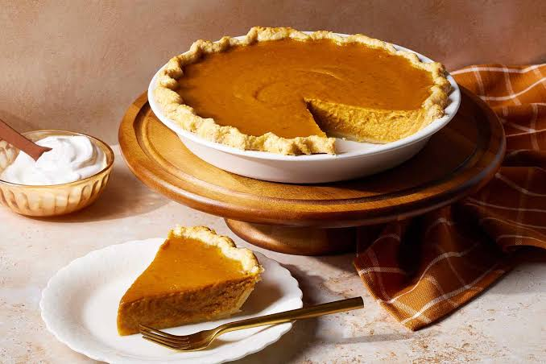

Home
Pumpkin Pie

Pumpkin pie is a classic dessert that is especially popular during the fall and holiday seasons. This easy recipe combines a smooth pumpkin filling with warm spices, all nestled in a flaky pie crust. Whether you're serving it at Thanksgiving or just craving a slice of autumn, this pumpkin pie is sure to delight your taste buds.
Ingredients
- 1 (9-inch) unbaked pie crust
- 3/4 cup granulated sugar
- 1/2 teaspoon salt
- 1 teaspoon ground cinnamon
- 1/2 teaspoon ground ginger
- 1/4 teaspoon ground cloves
- 2 large eggs
- 1 (15-ounce) can pumpkin puree
- 1 (12-ounce) can evaporated milk
Instructions
- Preheat your oven to 425°F (220°C).
- In a large bowl, combine the sugar, salt, cinnamon, ginger, and cloves. Beat the eggs in a separate bowl, then add them to the sugar-spice mixture. Stir in the pumpkin puree and evaporated milk until well blended.
- Pour the pumpkin filling into the unbaked pie crust.
- Bake in the preheated oven for 15 minutes. Reduce the temperature to 350°F (175°C) and continue baking for 40-50 minutes, or until a knife inserted near the center comes out clean.
- Allow the pie to cool on a wire rack for at least 2 hours before serving. Enjoy with whipped cream if desired!